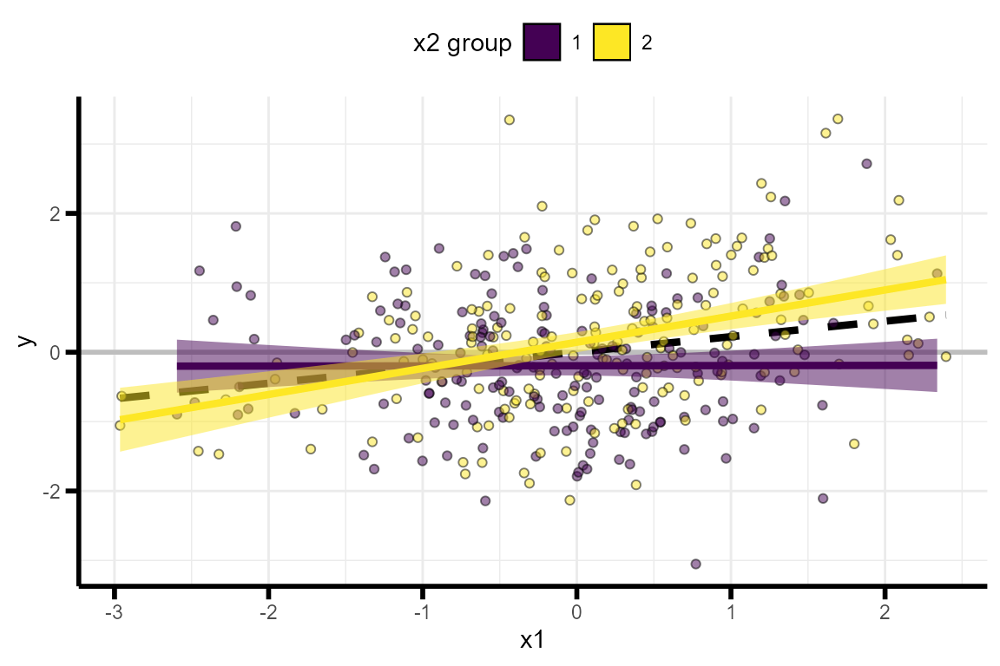
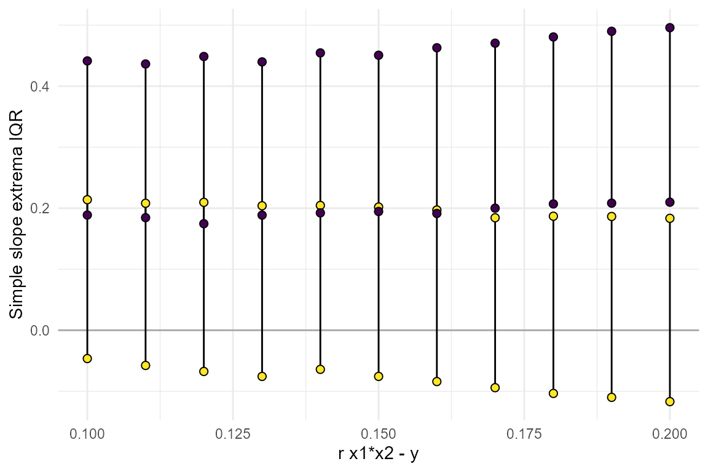
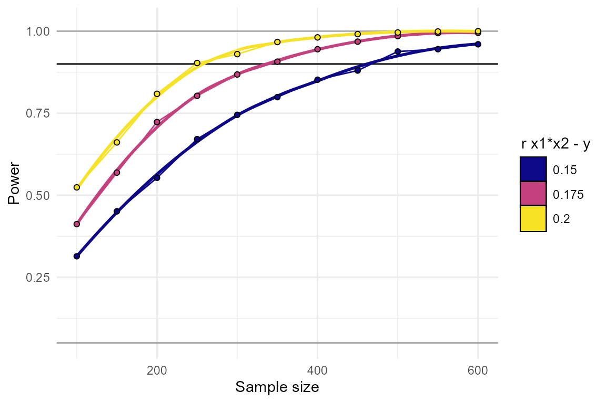
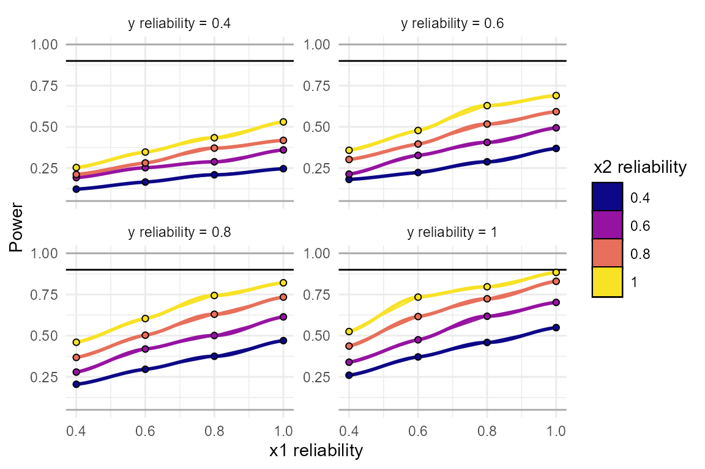
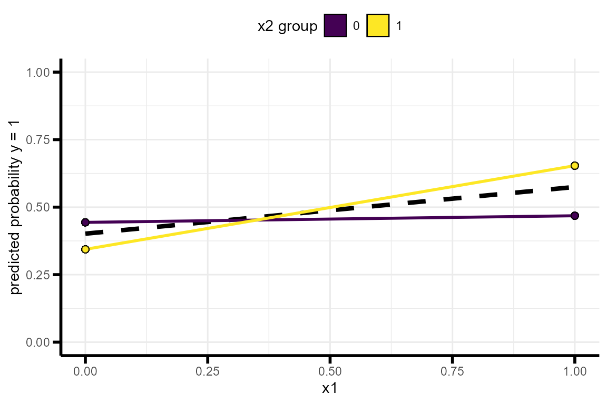

vignettes/articles/InteractionPoweRvignette.Rmd
InteractionPoweRvignette.RmdThe InteractionPoweR package conducts power analyses for regression models in cross-sectional data sets where the term of interest is an interaction between two variables, also known as ‘moderation’ analyses. The package includes functions for simulating data sets, conducting power analyses, and plotting and interpreting results. Notable package features include (1) the ability to compute power for interactions between two continuous variables, (2) effect sizes are all specified as the cross-sectional Pearson’s correlation, (3) simulations do not assume that the interacting variables are independent, (4) any variable in the model, including the outcome, can be binary, and (5) analyses can incorporate the effects of reliability and skew, both of the interacting variables, as well as of the outcome variable.
Interaction analyses take the form:
\[ Y \sim \beta_0 + X_1\beta_1 + X_2\beta_2 + X_1X_2\beta_3 + \epsilon \]
Where \(Y\) is the dependent variable, \(X_1\) and \(X_2\) are our independent variables, and our interaction term is \(X_1X_2\). The \(\beta\)s in this equation are our regression coefficients and \(\epsilon\) is our error. Note that in this equation, and throughout the code in this package, we refer to the two interacting variables as \(X_1\) and \(X_2\), as opposed to \(X\) and \(Z\), or \(X\) and \(M\). This is to emphasize that, as far as these simulations are concerned, \(X_1\) and \(X_2\) are interchangeable, and any conclusions about causality (i.e. “moderation”) will rely on the specifics of the variables.
The goal of the power analyses supported by this package is to determine how much power an analysis has to detect whether \(\beta_3\) (the interaction term regression coefficient) is different from 0 at some pre-specified \(\alpha\) value (alpha, or p-value). \(\alpha\) refers to our false positive rate, which is how frequently we will accept that our analysis has incorrectly rejected the null hypothesis. Power, refers to our true positive rate, how frequently do we want to correctly accept the alternative hypothesis? It may be easier to think about the inverse of power, the false negative rate: how frequently will we incorrectly accept the null hypothesis? A “typical” (though not necessarily recommended) value for power is 0.8, which means that 20%, or \(1/5\), of the time, the analysis will incorrectly conclude that there is no effect when there actually is one. (We recommend striving for at least a power of .9)
Any simulation in this package requires at minimum 5 input variables:
N: the sample size.r.x1.y: the Pearson’s correlation (\(r\)) between \(X_1\) and \(Y\)
r.x2.y: the Pearson’s correlation (\(r\)) between \(X_2\) and \(Y\)
r.x1.x2: the Pearson’s correlation (\(r\)) between \(X_1\) and \(X_2\)
r.x1x2.y: the Pearson’s correlation (\(r\)) between \(X_1X_2\) and \(Y\) - this is the interaction effectIt is important to emphasize here that inputs 2-5 are the population-level Pearson’s correlation between each pair of variables. This is true even if any or all of the variables in the simulation are binary. These correlations are used to derive the regression coefficients via path tracing rules. Also note that these effect sizes are the cross-sectional correlation. This is in contrast to how one specifies effects for experimental manipulations, where the effects are the correlation in each of the experimental conditions. The Pearson’s correlation is equivalent to the effect size \(\beta\) (i.e. in the regression \(Y \sim \beta_0 + X\beta + \epsilon\)) when both \(Y\) and \(X\) are normalized (mean = 0, sd = 1). For inputs 2-4, we imagine that it will be relatively straightforward for most users to identify the appropriate values (i.e. by surveying the literature and identifying large independent studies where the effects have been reported). However, in the case of the interaction effect size, r.x1x2.y, users may be less used to thinking about interaction effects as correlations. The interaction effect size is the how much the correlation between one of the two independent variables and the dependent variable changes when conditioned on the other independent variable. It is both how much \(corr(X_1,Y)\) changes when conditioned on \(X_2\), and equivalently how much \(corr(X_2,Y)\) changes when conditioned on \(X_1\).
A common way of thinking about interaction effect sizes is to plot the data as “simple slopes”. A simple slopes plot shows the correlation between one of the independent variables (e.g. \(X_1\)) and the dependent variable (\(Y\)) in different subsets of the data, where each subset is defined by their value at the second independent variable (e.g. \(X_2\)). For example, we can plot \(Y \sim X_1\) separately in participants with an \(X_2\) value in the lower-half of the distribution and the upper-half of the distribution.
To facilitate user’s understanding of interaction effect sizes, InteractionPoweR includes functions for simulating single data sets and plotting the interaction as a simple slopes plot:
The function generate_interaction() simulates a single data set:
set.seed(2020)
library(InteractionPoweR)
example_data = generate_interaction(N = 350, # sample size
r.x1.y = .2, # correlation between x1 and y
r.x2.y = .1, # correlation between x2 and y
r.x1.x2 = .2, # correlation between x1 and x2
r.x1x2.y = .15 # correlation between x1x2 and y
)The data can then be plotted using the plot_interaction() function:
plot_interaction(data = example_data, # simulated data
q = 2 # number of simple slopes
)
The function test_interaction() provides easy access to the results of the interaction regression, as well as the correlation between the variables, and the slopes of the simple-slopes:
test_interaction(data = example_data, # simulated data
q = 2 # number of simple slopes
)## $linear.model
## Estimate Std. Error t value Pr(>|t|)
## x1 0.1888967 0.05153863 3.665148 2.859696e-04
## x2 0.1356407 0.05165265 2.626016 9.022851e-03
## x1x2 0.2129386 0.05001033 4.257892 2.661829e-05
##
## $x1x2.adjusted.r2
## [1] 0.04391331
##
## $x1x2.confint
## x1x2_95confint_2.5 x1x2_95confint_97.5
## 1 0.1145761 0.3113011
##
## $interaction.shape
## crossover.point shape
## 1 -0.6369945 1.127275
##
## $simple.slopes
## lower.slope upper.slope
## x2 0.00222888 0.3766329
##
## $correlation
## cor v1 v2
## 5 0.20000000 x1 x2
## 9 0.22361262 x1 y
## 10 0.18961691 x2 y
## 13 0.03519020 x1 x1x2
## 14 0.07511716 x2 x1x2
## 15 0.23245767 y x1x2The simplest power analysis we can run is one in which all the parameters are already known. All the correlations are known, the sample size is known, and the interaction effect size is known. The power analysis is run with the function power_interaction(). We additionally specify alpha, which is the p-value we’re using (0.05 is default), and n.iter, which is the number of simulations run. In this example we’ll use just 1,000 simulations, but we recommend using 10,000 for more stable results. Also note that in all these examples the parameter seed is set. This is the seed for the random number generator, which will allow you to obtain the same results. However, we recommend not setting seed when running your own power analyses, at least until you are ready to share the results. Each time an analysis is run a new seed will be chosen and echoed, so that you will be able to reproduce your results.
power_interaction(n.iter = 1000, # number of simulations
alpha = 0.05, # p-value
N = 350, # sample size
r.x1.y = .2, # correlation between x1 and y
r.x2.y = .1, # correlation between x2 and y
r.x1.x2 = .2, # correlation between x1 and x2
r.x1x2.y = .15, # correlation between x1x2 and y
seed = 290115 )# seed## [1] "Checking for errors in inputs..."
## [1] "Performing 1000 simulations"## # A tibble: 1 x 1
## pwr
## <dbl>
## 1 0.824We find that our analysis has 82% power (pwr).
Typically not all variables are known in a power analysis. For example, we know the magnitude of the interaction effect we’re interested in, and we want to learn what sample size would be needed to detect that effect with 90% power. Or we have a sample already, and we want to learn what is the smallest effect we can detect with 90% power. To answer these questions, the user simply needs to provide the range of parameters that they would like the analysis to use. Almost any of the input parameters can be ranges, and the analysis runs n.iter simulations for every combination of input parameters.
As the number of input parameters increase, so too does the total number of simulations. To reduce the amount of time an analysis takes, power_interaction() supports running simulations in parallel. The number of cores to be used for the parallel simulation is indicated by the cl flag (we recommend a number between 4 - 6 on most personal computers).
For example, to explore multiple sample sizes we can set N = seq(200,600,by = 50), which runs a simulation for N = 200, 250, 300 etc, up to N=500. Equivalently, we could also set N = c(200,250,300,350,400,450,500,550,600), but the former is faster to write.
power_test = power_interaction(n.iter = 1000, # number of simulations
alpha = 0.05, # p-value
N = seq(200,600,by = 50), # sample size
r.x1.y = .2, # correlation between x1 and y
r.x2.y = .1, # correlation between x2 and y
r.x1.x2 = .2, # correlation between x1 and x2
r.x1x2.y = .15, # correlation between x1x2 and y
cl = 6, # number of clusters for parallel analyses
seed = 507421 ) # seed## [1] "Checking for errors in inputs..."
## [1] "Performing 9000 simulations"
power_test## N pwr
## 1 200 0.564
## 2 250 0.664
## 3 300 0.751
## 4 350 0.827
## 5 400 0.853
## 6 450 0.903
## 7 500 0.921
## 8 550 0.948
## 9 600 0.967We can plot these results using the function plot_power_curve():
plot_power_curve(power_data = power_test, # output from power_interaction()
power_target = .9 # the power we want to achieve
)
By eye-balling this plot, we can see that N=450 yields approximately 90% power, and N=330 yields approximately 80% power. The function power_estimate() can be used to obtain a more precise answer. This function fits a regression model to the power results to estimate when a specific power will be achieved.
power_estimate(power_data = power_test, # output from power_interaction()
x = "N", # the variable we want a precise number for
power_target = 0.9 # the power we want to achieve
)## [1] 442.7771Our guess turned out to be accurate in this case, and N=443 yields approximately 90% power.
Another common use-case is when the sample size and variables-of-interest are known, and we want to know how small of an interaction effect can be detected at a certain power level. We can repeat the same steps as above, except this time r.x1x2.y will be a range of values.
power_test = power_interaction(n.iter = 1000, # number of simulations
alpha = 0.05, # p-value
N = 350 , # sample size
r.x1.y = .2, # correlation between x1 and y
r.x2.y = .1, # correlation between x2 and y
r.x1.x2 = .2, # correlation between x1 and x2
r.x1x2.y = seq(.1,.2,by=.01), # correlation between x1x2 and y
cl = 6, # number of clusters for parallel analyses
seed = 387455 ) # seed## [1] "Checking for errors in inputs..."
## [1] "Performing 11000 simulations"
power_test## r.x1x2.y pwr
## 1 0.10 0.501
## 2 0.11 0.543
## 3 0.12 0.603
## 4 0.13 0.704
## 5 0.14 0.763
## 6 0.15 0.809
## 7 0.16 0.828
## 8 0.17 0.905
## 9 0.18 0.918
## 10 0.19 0.942
## 11 0.20 0.965
plot_power_curve(power_data = power_test, # output from power_interaction()
power_target = .9 # the power we want to achieve
)
power_estimate(power_data = power_test, # output from power_interaction()
x = "r.x1x2.y", # the variable we want a precise number for
power_target = 0.9 # the power we want to achieve
)## [1] 0.1738874We see that we have approximately 90% power to detect effects as small as r.x1x2.y = 0.17.
In some cases it may also be useful to take a look the distribution of simple slopes across the range of parameters tested. If we re-run our simulation using detailed_results=T, we can look at the distribution of effect sizes and simple slopes.
power_test = power_interaction(n.iter = 1000, # number of simulations
alpha = 0.05, # p-value
N = 350 , # sample size
r.x1.y = .2, # correlation between x1 and y
r.x2.y = .1, # correlation between x2 and y
r.x1.x2 = .2, # correlation between x1 and x2
r.x1x2.y = seq(.1,.2,by=.01), # correlation between x1x2 and y
cl = 6, # number of clusters for parallel analyses
detailed_results = T, # detailed results
seed = 316834 # seed
)## [1] "Checking for errors in inputs..."
## [1] "Performing 11000 simulations"
plot_simple_slope(power_data = power_test)
From this we can learn that the range of slopes that would be consistent with the smallest effect we are powered to detect, r.x1x2.y=0.17, is quite large. In particular, note that the lower slope could be negative, 0, or even fairly large in the positive direction - all consistent with r.x1x2.y=0.17. See the section below on Detailed Results for more information on all the outputs when detailed.results = TRUE.
It is not uncommon that multiple parameters in the simulation are unknown. To find the power at every combination of the parameters, simply input a range of values for every unknown parameter in the simulation. We generally recommend to only vary up to 3 parameters at a time, any more and the simulation can take a very long time to run. For example, lets say there’s a range of plausible effect sizes for the interaction, and we want to know how large of a sample we would need to detect each of them. To test this, we can vary both N and r.x1x2.y:
power_test = power_interaction(n.iter = 1000, # number of simulations
alpha = 0.05, # p-value
N = seq(100,600,by = 50), # sample size
r.x1.y = .2, # correlation between x1 and y
r.x2.y = .1, # correlation between x2 and y
r.x1.x2 = .2 , # correlation between x1 and x2
r.x1x2.y = seq(.15,.2,by=.025), # correlation between x1x2 and y
cl = 6, # number of clusters for parallel analyses
detailed_results = T,
seed = 742425)## [1] "Checking for errors in inputs..."
## [1] "Performing 33000 simulations"
plot_power_curve(power_data = power_test, # output from power_interaction()
power_target = .9, # the power we want to achieve
x = "N", # x-axis
group = "r.x1x2.y" # grouping variable
)
power_estimate(power_data = power_test, # output from power_interaction()
x = "N", # the variable we want a precise number for
power_target = 0.9 # the power we want to achieve
)## r.x1x2.y estimate
## 1 0.150 464.6584
## 2 0.175 322.2866
## 3 0.200 258.9152From this we’ve learned that, depending on exactly what effect size we’re aiming for, we’ll need an N between 260 and 460.
Reliability is an important issue in statistics. Even if effects are large, if your measurements are unreliable, then you’ll be under-powered. This is especially true for interactions, as the reliability of both \(X_1\) and \(X_2\) influence power, as well as the reliability of \(Y\). In the context of InteractionPoweR, “reliability” means the proportion of the variance of each variable that is attributable to true signal, as opposed to measurement error. A reliability of ‘1’ (the default), means that your variables were measured with no error (reliability must be greater than 0, and less than or equal to 1). Common statistics that reflect reliability include test-retest reliability, inter-rater reliability, and Cronbach’s alpha. The flags rel.x1, rel.x2, and rel.y control the reliability of each simulated variable. We recommend exploring how much reliability will affect your power. For example:
power_test = power_interaction(n.iter = 1000, # number of simulations
alpha = 0.05, # p-value
N = 450, # sample size
r.x1.y = .2, # correlation between x1 and y
r.x2.y = .1, # correlation between x2 and y
r.x1.x2 = .2, # correlation between x1 and x2
r.x1x2.y = .15, # correlation between x1x2 and y
rel.x1 = seq(.4,1,by=.2), # x1 reliability
rel.x2 = seq(.4,1,by=.2), # x2 reliability
rel.y = seq(.4,1,by=.2), # y reliability
cl = 6, # number of clusters for parallel analyses
seed = 293437 )## [1] "Checking for errors in inputs..."
## [1] "Performing 64000 simulations"
plot_power_curve(power_data = power_test, # output from power_interaction()
power_target = .9, # the power we want to achieve
x = "rel.x1", # x-axis
group = "rel.x2", # grouping variable
facets= "rel.y" # facets variable
)
These plots make it clear how large of an effect reliability will have on your results. In this simulation, even a reliability of “acceptable” or “good” (reliability = 0.8), is enough to bring our power down, from 0.9 to 0.63!
InteractionPoweR simulates all variables as continuous and normal (skew=0). However, variables can be transformed so that they are binary and/or skewed. Typically, when a continuous and normal variable is transformed to be binary and/or skewed, the correlations between that variable and all other variables are reduced or altered. Sometimes, it makes sense for this to happen in the power analysis. For example, say a variable is continuous in the literature, and the effect sizes in the power analysis are drawn from prior work with the continuous variable, but in your analysis you’ve chosen to dichotomize that variable. In that case, the reduction in correlations makes sense, because that accurately reflects your data analysis and what your power will be. On the other hand, say a variable is binary (at least in the literature), maybe you’re looking at sex or diagnosis for a disorder. Or maybe you are looking at a variable that is skewed in the literature, such as alcohol consumption or depressive symptoms in the general population. In that case, your input correlations are the correlations with the binary/skewed variable, so you don’t want them to be reduced or altered.
InteractionPoweR distinguishes between these cases with the adjust.correlations flag. The default is adjust.correlations = TRUE. This indicates that the input correlations are with the binary/skewed variables. To circumvent the problem of variable transformations altering correlations, InteractionPoweR runs a function to compute how much the input correlations need to be adjusted so that the final output variables have the correlation structure specified by the user. When adjust.correlations = FALSE, this function is not run, allowing the user to see the impact of variable transformations on the correlation structure, and on their power.
The flags transform.x1, transform.x2, and transform.y control what distribution \(X_1\), \(X_2\), and \(Y\) are transformed to. Currently, this flag is useful for binarizing, (i.e. dichotomizing) a variable, as in transform.x1 = "binary". The flags skew.x1, skew.x2, and skew.y control the skew of \(X_1\), \(X_2\), and \(Y\). We achieve skew by transforming the normally distributed variable to a skewed gamma distribution. We intend to add additional distribution options in future releases. If a skew is specified, the respective transform flag will be automatically set to "gamma", unless the user specifies "binary". If a variable is binary, the binary.p2skew() convenience function can be used to compute the skew from the proportion of 0’s and 1’s (i.e. 50/50 = 0.5 = a skew of 0). If a variable is binarized but no skew is specified, skew will be set to 0 by default.
Here’s a single data set where x1, x2, and y are all binary. Note that when \(Y\) is binary, the analysis is run as a logistic regression.
# Normal
test_data = generate_interaction(
N = 450, # sample size
r.x1.y = .2, # correlation between x1 and y
r.x2.y = .1, # correlation between x2 and y
r.x1.x2 = .2, # correlation between x1 and x2
r.x1x2.y = .15, # correlation between x1x2 and y
transform.x1 = "binary", # x1 is binary
transform.x2 = "binary", # x2 is binary
transform.y = "binary", # y is binary
adjust.correlations = TRUE) # Adjust correlations for skew?
plot_interaction(data =test_data )
We can also examine the effects on power when the actual variable is skewed:
power_test = power_interaction(n.iter = 1000, # number of simulations
alpha = 0.05, # p-value
N = 450, # sample size
r.x1.y = .2, # correlation between x1 and y
r.x2.y = .1, # correlation between x2 and y
r.x1.x2 = .2, # correlation between x1 and x2
r.x1x2.y = .15, # correlation between x1x2 and y
skew.x1 = seq(0,2,by=.25), # x1 skew
adjust.correlations = TRUE, # Adjust correlations for skew?
cl = 6 , # number of clusters for parallel analyses
seed = 73071 )## [1] "Checking for errors in inputs..."
## [1] "Adjusting correlations for variable transformations..."
## [1] "Performing 9000 simulations"
plot_power_curve(power_data = power_test, # output from power_interaction()
power_target = .9 # the power we want to achieve
)
Beyond power and the range of simple slopes, InteractionPoweR generates a lot of additional information about the simulations. These can be optionally returned using detailed_results = TRUE and full_simulation = TRUE. By default, both of these flags are FALSE. detailed_results returns additional information for each unique setting combination, including the mean correlation structure between the simulated variables across niter simulations, and the mean regression coefficients. full_simulation, as the name suggests, returns the output of test_interaction() for every single simulated data set that power_interaction() generates. The output can be quite large (i.e. if 10,000 simulations are run, it will have 10,000 rows).
Let’s return to our example of examining a range of interaction effect sizes, except now with detailed_results = TRUE. This yields a lot more information about what the simulated data looked like, on average.
power_test = power_interaction(n.iter = 1000, # number of simulations
alpha = 0.05, # p-value
N = 350 , # sample size
r.x1.y = .2, # correlation between x1 and y
r.x2.y = .1, # correlation between x2 and y
r.x1.x2 = .2, # correlation between x1 and x2
r.x1x2.y = seq(.1,.2,by=.01), # correlation between x1x2 and y
cl = 6, # number of clusters for parallel analyses
detailed_results = TRUE # return detailed results
)## [1] "Seed is 277303"
## [1] "Checking for errors in inputs..."
## [1] "Performing 11000 simulations"
power_test## r.x1x2.y pwr x1x2_est_mean x1x2_r2_mean crossover_mean shape_mean
## 1 0.10 0.494 0.1415687 0.01876454 -0.4619808 0.8281285
## 2 0.11 0.534 0.1437299 0.01946217 -0.4524989 0.8487847
## 3 0.12 0.625 0.1488223 0.02126228 -0.4382807 0.8895391
## 4 0.13 0.701 0.1536126 0.02290597 -0.4461747 0.9225177
## 5 0.14 0.768 0.1587378 0.02470927 -0.4051289 0.9234641
## 6 0.15 0.810 0.1637682 0.02631024 -0.3938325 0.9852080
## 7 0.16 0.859 0.1689945 0.02834222 -0.4043839 1.0085705
## 8 0.17 0.895 0.1765999 0.03101163 -0.3789223 1.0596570
## 9 0.18 0.937 0.1840920 0.03388142 -0.3557276 1.0732292
## 10 0.19 0.960 0.1916700 0.03682960 -0.3340812 1.1421984
## 11 0.20 0.975 0.1997528 0.04064131 -0.3387758 1.2221346
## min.lwr min.upr max.lwr max.upr x1x2_95_CI_2.5_mean
## 1 -0.05729518 0.2122131 0.1732213 0.4303705 0.04055404
## 2 -0.05722042 0.2063897 0.1826742 0.4372992 0.04268456
## 3 -0.06467267 0.2132136 0.1822312 0.4425672 0.04804131
## 4 -0.06854847 0.1982153 0.1937357 0.4528082 0.05304366
## 5 -0.06666062 0.2042873 0.2021232 0.4448863 0.05793824
## 6 -0.08079932 0.1954039 0.1908421 0.4632406 0.06311739
## 7 -0.08371465 0.1969567 0.1943643 0.4569630 0.06843728
## 8 -0.09456866 0.1913897 0.1938572 0.4756132 0.07613918
## 9 -0.10612925 0.1900882 0.2106640 0.4681862 0.08361612
## 10 -0.11340591 0.1818553 0.2047799 0.4896240 0.09110018
## 11 -0.12079139 0.1839233 0.2216293 0.4885893 0.09983078
## x1x2_95_CI_97.5_mean x1x2_95_CI_width_mean r_y_x1x2_q_2.5 r_y_x1x2_q_50.0
## 1 0.2425833 0.2020293 0.08848426 0.1389968
## 2 0.2447751 0.2020906 0.08806131 0.1388735
## 3 0.2496034 0.2015621 0.09075335 0.1450566
## 4 0.2541815 0.2011378 0.09592175 0.1538546
## 5 0.2595373 0.2015991 0.09636679 0.1560288
## 6 0.2644190 0.2013016 0.09423468 0.1631130
## 7 0.2695517 0.2011144 0.09568028 0.1690827
## 8 0.2770607 0.2009215 0.09855736 0.1796895
## 9 0.2845679 0.2009518 0.11047213 0.1856735
## 10 0.2922399 0.2011397 0.11167161 0.1926035
## 11 0.2996748 0.1998440 0.11473601 0.2034652
## r_y_x1x2_q_97.5 x1_est_mean x2_est_mean x1_pwr x2_pwr
## 1 0.2291311 0.1881460 0.06275476 0.944 0.221
## 2 0.2310188 0.1856230 0.06133046 0.933 0.224
## 3 0.2298826 0.1887811 0.06184092 0.948 0.205
## 4 0.2437811 0.1891903 0.06458132 0.955 0.228
## 5 0.2528085 0.1892109 0.06101913 0.952 0.227
## 6 0.2609328 0.1878766 0.06147682 0.936 0.217
## 7 0.2635555 0.1853947 0.06471401 0.948 0.231
## 8 0.2708916 0.1856022 0.06270192 0.944 0.227
## 9 0.2844487 0.1869308 0.06226448 0.957 0.218
## 10 0.2908955 0.1871553 0.06077683 0.949 0.214
## 11 0.3005169 0.1867724 0.06399038 0.954 0.223What is all this?
The first two columns are our standard output, the setting that was varied across simulations, and the power. Next we have x1x2_est_mean and x1x2_r2_mean. This is the mean effect size (\(B_3\)) and mean change in the adjusted \(R^2\) (or pseudo-\(R^2\) when \(Y\) is binary) when the interaction term \(X_1X_2\) is added to the model. crossover and shape are the value of \(X_1\) where the \(X_2\) simple slopes intersect, and the shape of the interaction (\(B_3 / B_1\)), which reflects whether it is a knock-out, attenuated, or crossover interaction.
Next we have min.lwr, min.upr, max.lwr, and max.upr. These reflect the range of simple-slopes that were observed in the simulations where the interaction was significant. By default, the number of simple slopes (q) is 2 (i.e. a 50/50 split), and \(X_2\) is the variable being conditioned on. The ranges reflect that the majority of the lower simple slope ranges from -0.05 to .2, and the upper simple slope ranges from .2 to .45. The proportion of the simple slopes reflected by these ranges can be controlled with the IQR flag. The default value for IQR is 1.5, which means that the output ranges are the median lower and upper simple slope, +/- 1.5 IQRs (an IQR is the 75th percentile - 25th percentile). This output is intended to give further insight into the effect sizes detected by the simulation.
x1x2_95_CI_2.5_mean and x1x2_95_CI_97.5_mean are the mean lower and upper 95% confidence intervals of the interaction term, and x1x2_95_CI_width_mean is the mean width of the confidence interval. Similarly, r_y_x1x2_q_2.5, r_y_x1x2_q_50.0, and r_y_x1x2_q_97.5 are quantiles (2.5%, 50%, and 97.5%) of the correlation between \(Y\) and \(X_1X_2\) when the interaction is significant.
x1_est_mean and x2_est_mean are the mean main effects of \(X_1\) and \(X_2\), and pwr_x1 and pwr_x2 is the power to detect those main effects, in the context of the full interaction regression.
full_results can be useful when one wants a better grasp of what goes into the power analysis. If we return to our first example, we can see what range of sample-level correlations one can expect to see, given a population-level correlation:
power_test = power_interaction(n.iter = 1000, # number of simulations
alpha = 0.05, # p-value
N = 350, # sample size
r.x1.y = .2, # correlation between x1 and y
r.x2.y = .1, # correlation between x2 and y
r.x1.x2 = .2, # correlation between x1 and x2
r.x1x2.y = .15, # correlation between x1x2 and y
full_simulation = T, # return the full simulation results
seed = 942141
)## [1] "Checking for errors in inputs..."
## [1] "Performing 1000 simulations"
# the standard output:
power_test$results## # A tibble: 1 x 1
## pwr
## <dbl>
## 1 0.812
# range of correlations when the test is significant
quants = c(0,.025,.25,.5,.75,.975,1) #quantiles
power_test$simulation %>%
dplyr::filter(sig_int ==1 ) %>% # only significant results
dplyr::summarise(prob = quants,
qs = stats::quantile(r_y_x1x2,quants))## prob qs
## 1 0.000 0.05927399
## 2 0.025 0.09522459
## 3 0.250 0.13473967
## 4 0.500 0.16333570
## 5 0.750 0.19638807
## 6 0.975 0.26393664
## 7 1.000 0.34046672When \(B_3\) is significant (sig_int == 1), 95% of the observed sample-level correlations range from 0.1to 0.25, even though the population-level correlation is 0.15! Also note that more than half of the observed significant effect sizes are greater than 0.15, even though the median of all effects is 0.15. This is why post-hoc power-analyses using the observed effect-sizes in your sample are typically not a great idea. Because the choice to run the power analysis is conditioned on the result being significant, you’ve effectively subjected yourself to publication bias, and as a result the power analysis will tend to yield an inflated estimate of power.